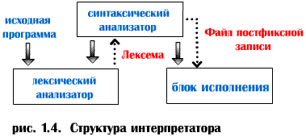

Интерпретатор
Интерпретаторы реализуют принцип, альтернативный компилированию. Компиляторы и интерпретаторы имеют много общего. Интерпретатор, тоже вначале просматривает исходную программу и выделяет в ней лексемы. Для этого используются блоки сканирования и анализаторы, аналогичные тем, которые входят в состав компилирующих программ. Однако интерпретатор вместо построения объектного кода, способного выполнять те или иные операции, сам производит соответствующие действия.

Достоинства интерпретатора :
-
относительная простота реализации;
-
удобство отладки програм;
Достоинства компилятора :
-
скорость выполнения;
-
независимость выполняемого кода от системы программирования;
-
возможность передавать программы заказчикам без исходных текстов.
Большинство современных интерпретаторов выполняют не исходный код, а преобразуют его в промежуточный, который затем интерпретируется. Это позволяет несколько повысить скорость исполнения и избежать передачи заказчикам исходных текстов. Для трансляции классических языков программирования (C, C++, Паскаль, Delphi и др.) обычно используются компиляторы. Как интерпретаторы выполнены большинство реализаций Бейсика и языков управления СУБД. Язык сетевого программирования Java реализован как интерпретируемый специальной виртуальной Java-машиной. Это обеспечивает возможность исполнения промежуточного кода Java на любом типе компьютера, где имеется такая виртуальная Java-машина.